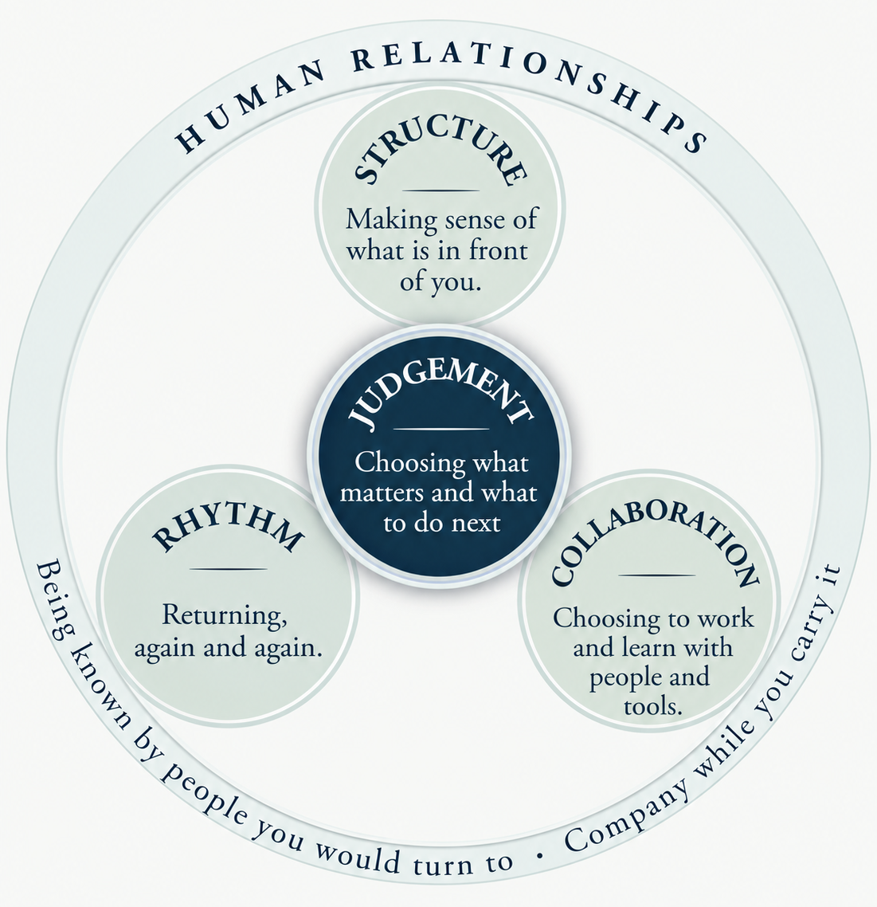

Studying in the UK
What should learning leave us able to do?
Studying at university is about more than gaining knowledge and qualifications. It means learning to understand unfamiliar situations, make judgements and find your own way forward.
Explore practical activities and resources that help you put these ideas into practice, including learning with AI.
Your Guide toStudying in the UK
Developing Judgement, Agency and Confidence while Learning
Forthcoming from Routledge, the book is written for international students across disciplines. It begins with experiences many students recognise: finding their voice in class, making sense of assignments, and working out how to move forward when the next step is unclear.
Through student experiences, practical guidance and reflection, it explores how we develop judgement, make choices, learn with others and AI, and build confidence through practice.
The book looks beyond completing a degree to consider what we develop through learning — and what we can carry into the situations that come next.
in the UK
Agency and Confidence
while Learning
The QRenewal Learning System
Building the Inner Capacities for Learning and Life

You may be working hard but still feel stuck, uncertain or unable to make progress. Sometimes, the answer is not to work harder, but to understand what is holding you back and what might help.
The QRenewal Learning System brings together four connected capacities—Structure, Judgement, Rhythm and Collaboration—supported by Human Relationships.
These are capacities you may already use in your learning. The system helps you recognise what is working, identify what needs attention and find a way forward. It is not a fixed formula.
Try the Quiet Self-Check to reflect on your learning and discover one small step forward. There are no scores or right answers.
Student Resources
The book offers Quick Practices and tools for turning ideas into action. This section will develop complementary examples, reflection activities and downloadable worksheets organised around challenges students actually face.
Understanding an Assignment
Work out what the brief asks, what the marking criteria value and where to begin.
Finding Direction
Reflect on where you are, what matters now and how to choose a manageable next step.
Developing an Argument
Connect ideas and evidence, make reasoning visible and reach a judgement you can defend.
Learning Beyond University
Consider what you are developing through study and what you can carry into unfamiliar situations.
Learning with AI
AI is changing how students access information, develop ideas and complete academic work. It can explain concepts, support analysis, provide feedback and help us explore different approaches. But producing better work with AI does not necessarily mean that we have learned more.
Learning with AI therefore involves more than knowing how to use a tool. We need to consider how AI contributes to learning, which decisions remain ours and what understanding and abilities we develop through the process. The book introduces three checks to support that judgement.
Boundary
When and how should AI be used, and when might its involvement change the nature of our learning?
Start Boundary CheckOwnership
What can we explain, justify and take responsibility for in the work we produce?
Start Ownership CheckWhat remains with you?
After working with AI, what have you learned? What can you now explain, apply or do independently?
Start ReflectionAbout Studying in the UK
Studying in the UK is an evolving educational project accompanying the forthcoming Routledge book. It offers practical resources and learning activities to help students navigate university study while developing judgement, agency and confidence.
Beginning with the experiences explored in the book, the project will continue to develop through teaching, student feedback and educational inquiry. Particular attention is given to learning with AI while maintaining understanding, independence and responsibility for one's learning.
As the project develops, additional resources, examples and activities will be introduced to help students put these ideas into practice.